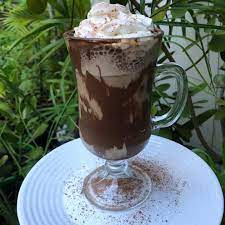

CAPUCCINO GELADO

Descrição
Perfeito pra refrescar no calor!
Ingredientes
- 1/2 xícara (chá) de leite
- 3 colheres (sopa) de preparado para capuccino
- 2 bolas de sorvete de creme
- 1 1/2 colheres (sopa) de chocolate em pó
Modo de Fazer
- No liquidificador, adicione o leite juntamente com o chocolate
- Em seguida coloque o sorvete e por último adicione a mistura de capuccino
- Bata por aproximadamente 3 segundos
- Em uma taça deixe cair um pouco de calda de chocolate ou caramelo
- Coloque a bebida batida, cubra com chantilly e polvilhe com canela
voltar